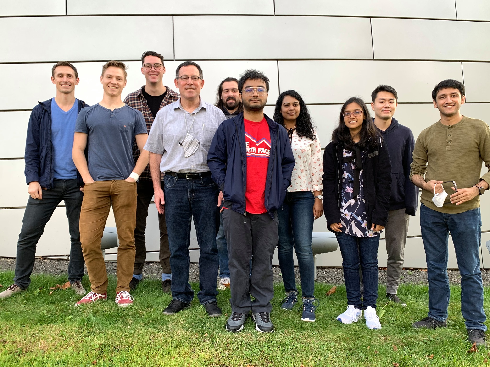

News:
- August 2021: Started my Ph.D. at
UMass Amherst.
- January 2021: I will be joining as a Junior Lecturer at
the Department of Computer Science and Engineering,
Ahsanullah University of Science and Technology.
- January 2021: I will be presenting my work and volunteering at IJCAI-2020.
- September 2020: New preprint:
On Population-Based Algorithms for Distributed Constraint Optimization Problems
is now available!
- May 2020: I will be presenting my work at AAMAS-2020.
- April 2020: IJCAI paper on Learning Optimal Temperature Region for Solving Mixed
Integer Functional DCOPs accepted.
- February 2020: Started working at CAIL Research Group, University of Dhaka as a full-time research assitant.
- January 2020: AAMAS paper on AED: An Anytime Evolutionary DCOP Algorithm accepted.
- January 2020: Received a ICT Innovation Grant to work on Security Games!
- January 2020: Successfully defended my undergraduate thesis!
Current Research Projects:
- Rafid Amir Mahmud, Fahim Faisal, Saaduddin Mahmud,
and Md. Mosaddek Khan.
GraphZero: Using Graph Neural Networks for Solving Combinatorial Games on Graphs (Working Paper, Part of ICT Innovation Grant AI4SG Project, 2020).
- Saaduddin Mahmud, and
Md. Mosaddek Khan.
Risk-Averse Decentralized Cooperative Stochastic Bandits (Working Paper).
- Saaduddin Mahmud,
Md. Mosaddek Khan, and
Nicholas R. Jennings.
On Population-Based Algorithms for Distributed Constraint Optimization Problems (Under Review).
[ARXIV]
- K. M. Merajul Arefin,
Mashrur Rashik,
Saaduddin Mahmud,
and Md. Mosaddek Khan.
An Artificial Bee Colony Based Algorithm for Continuous DCOPs (Under Review).
Publications:
- Saaduddin Mahmud,
Md. Mosaddek Khan,
Moumita Choudhury,
Long Tran-Thanh,
and Nicholas R. Jennings.
Learning Optimal Temperature Region for Solving Mixed Integer Functional DCOPs. In the proceedings of the 29th
International Joint Conference on Artificial Intelligence (IJCAI 2020).
[ARXIV]
[IJCAI]
- Saaduddin Mahmud,
Moumita Choudhury,
Md. Mosaddek Khan,
Long Tran-Thanh,
and Nicholas R. Jennings.
AED: An Anytime Evolutionary DCOP Algorithm. In the proceedings of the 19th International Conference on Autonomous
Agents and Multi-Agent Systems (AAMAS 2020).
[ARXIV]
[IFAAMAS]
[ACM]
- Moumita Choudhury, Saaduddin Mahmud, and
Md. Mosaddek Khan. A Particle Swarm Based Algorithm for Functional Distributed Constraint Optimization Problems.
In the proceedings of the Thirty-Fourth AAAI Conference on
Artificial Intelligence (AAAI 2020).
[AAAI]
- Saaduddin Mahmud and Moumita Choudhury (Equal Contribution). Applying Population-Based Algorithms to Solve Large (F)DCOPs.
Undergraduate Thesis, Department of Computer Science and Engineering, University Of Dhaka, 2020.
Softwares:
- AL.GO: A project written in java to visualize well known algorithms and help students learn them faster.
[Youtube, 2017]
- Step by step algorithm visualizer.
- Contains codes, problem links on specific topic to help students learn faster.
- MuSyc: An android application for music synchronization across mobile devices.
[Github, 2017]
- Music synchronization across different mobiles.
- Social-network for sharing music.
- EasyML: A web application written in python for automated data visualization and classification.
[Github, 2018]
- Automated data visualization and classification.
- Fast hyper-parameter optimization for different classifiers.
Blogs: